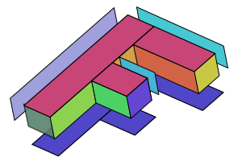
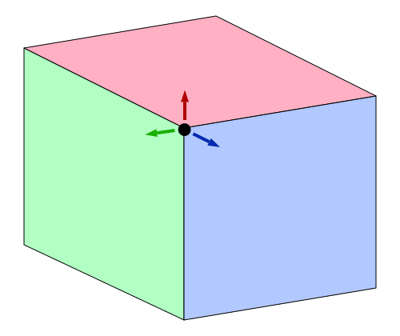
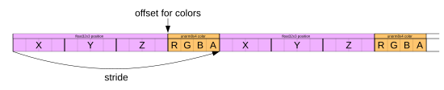
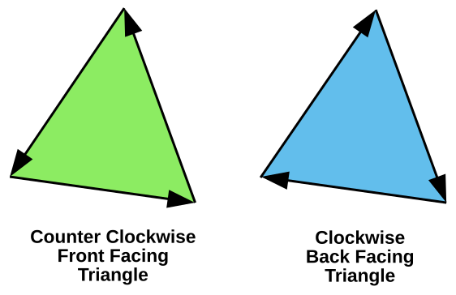

Este artículo es el quinto de una serie que esperamos que te enseñe sobre matemáticas 3D. Cada uno se basa en la lección anterior, por lo que es posible que te resulten más fáciles de entender leyéndolos en orden.
En la última publicación repasamos cómo funcionan las matrices. Hablamos de cómo la traslación, la rotación, el escalado e incluso la proyección de píxeles a espacio de recorte pueden hacerse con una sola matriz y algo de magia de matemáticas de matrices. Hacer 3D es solo un pequeño paso desde ahí.
En nuestros ejemplos anteriores en 2D teníamos puntos 2D (x, y) que multiplicábamos por una matriz de 3x3. Para hacer 3D necesitamos puntos 3D (x, y, z) y una matriz de 4x4.
Tomemos nuestro último ejemplo y cambiémoslo a 3D. Usaremos una F de nuevo, pero esta vez una ‘F’ en 3D.
Lo primero que debemos hacer es cambiar el vertex shader (shader de vértices) para que maneje 3D. Aquí está el antiguo vertex shader.
struct Uniforms {
color: vec4f,
- matrix: mat3x3f,
+ matrix: mat4x4f,
};
struct Vertex {
- @location(0) position: vec2f,
+ @location(0) position: vec4f,
};
struct VSOutput {
@builtin(position) position: vec4f,
};
@group(0) @binding(0) var<uniform> uni: Uniforms;
@vertex fn vs(vert: Vertex) -> VSOutput {
var vsOut: VSOutput;
-
- let clipSpace = (uni.matrix * vec3f(vert.position, 1)).xy;
- vsOut.position = vec4f(clipSpace, 0.0, 1.0);
vsOut.position = uni.matrix * vert.position;
return vsOut;
}
@fragment fn fs(vsOut: VSOutput) -> @location(0) vec4f {
return uni.color;
}
¡Se volvió incluso más simple! Al igual que en 2D proporcionábamos x e y y luego establecíamos z a 1, en 3D proporcionaremos x, y y z, y necesitamos que w sea 1, pero podemos aprovechar el hecho de que para los atributos w tiene el valor predeterminado de 1.
Luego necesitamos proporcionar datos en 3D.
function createFVertices() {
const vertexData = new Float32Array([
// columna izquierda
* 0, 0, 0,
* 30, 0, 0,
* 0, 150, 0,
* 30, 150, 0,
// travesaño superior
* 30, 0, 0,
* 100, 0, 0,
* 30, 30, 0,
* 100, 30, 0,
// travesaño central
* 30, 60, 0,
* 70, 60, 0,
* 30, 90, 0,
* 70, 90, 0,
]);
const indexData = new Uint32Array([
0, 1, 2, 2, 1, 3, // columna izquierda
4, 5, 6, 6, 5, 7, // travesaño superior
8, 9, 10, 10, 9, 11, // travesaño central
]);
return {
vertexData,
indexData,
numVertices: indexData.length,
};
}
Arriba simplemente añadimos un 0, al final de cada línea.
const pipeline = device.createRenderPipeline({
label: '2 attributes',
layout: 'auto',
vertex: {
module,
buffers: [
{
- arrayStride: (2) * 4, // (2) floats, 4 bytes cada uno
+ arrayStride: (3) * 4, // (3) floats, 4 bytes cada uno
attributes: [
- {shaderLocation: 0, offset: 0, format: 'float32x2'}, // position
+ {shaderLocation: 0, offset: 0, format: 'float32x3'}, // position
],
},
],
},
fragment: {
module,
targets: [{ format: presentationFormat }],
},
});
A continuación, necesitamos cambiar todas las matemáticas de matrices de 2D a 3D.
| 1 | 0 | tx |
| 0 | 1 | ty |
| 0 | 0 | 1 |
| 1 | 0 | 0 | tx |
| 0 | 1 | 0 | ty |
| 0 | 0 | 1 | tz |
| 0 | 0 | 0 | 1 |
| c | -s | 0 |
| s | c | 0 |
| 0 | 0 | 1 |
| c | -s | 0 | 0 |
| s | c | 0 | 0 |
| 0 | 0 | 1 | 0 |
| 0 | 0 | 0 | 1 |
| sx | 0 | 0 |
| 0 | sy | 0 |
| 0 | 0 | 1 |
| sx | 0 | 0 | 0 |
| 0 | sy | 0 | 0 |
| 0 | 0 | sz | 0 |
| 0 | 0 | 0 | 1 |
También podemos crear matrices de rotación en X e Y.
| 1 | 0 | 0 | 0 |
| 0 | c | -s | 0 |
| 0 | s | c | 0 |
| 0 | 0 | 0 | 1 |
| c | 0 | s | 0 |
| 0 | 1 | 0 | 0 |
| -s | 0 | c | 0 |
| 0 | 0 | 0 | 1 |
Ahora tenemos 3 matrices de rotación. Solo necesitábamos una en 2D, ya que efectivamente solo rotábamos alrededor del eje Z. Ahora, sin embargo, para hacer 3D también queremos poder rotar alrededor de los ejes X e Y. Si las analizamos, verás que todas son muy similares. Si las desarrolláramos, verías que se simplifican igual que antes:
Rotación en Z:
nuevoX = x * c + y * -s; nuevoY = x * s + y * c;
Rotación en Y:
nuevoX = x * c + z * s; nuevoZ = x * -s + z * c;
Rotación en X:
nuevoY = y * c + z * -s; nuevoZ = y * s + z * c;
lo que te da estas rotaciones.
Aquí están las versiones 2D (anteriores) de mat3.translation, mat3.rotation y mat3.scaling:
const mat3 = {
...
translation([tx, ty], dst) {
dst = dst || new Float32Array(12);
dst[0] = 1; dst[1] = 0; dst[2] = 0;
dst[4] = 0; dst[5] = 1; dst[6] = 0;
dst[8] = tx; dst[9] = ty; dst[10] = 1;
return dst;
},
rotation(angleInRadians, dst) {
const c = Math.cos(angleInRadians);
const s = Math.sin(angleInRadians);
dst = dst || new Float32Array(12);
dst[0] = c; dst[1] = s; dst[2] = 0;
dst[4] = -s; dst[5] = c; dst[6] = 0;
dst[8] = 0; dst[9] = 0; dst[10] = 1;
return dst;
},
scaling([sx, sy], dst) {
dst = dst || new Float32Array(12);
dst[0] = sx; dst[1] = 0; dst[2] = 0;
dst[4] = 0; dst[5] = sy; dst[6] = 0;
dst[8] = 0; dst[9] = 0; dst[10] = 1;
return dst;
},
...
Y aquí están las versiones 3D actualizadas:
const mat4 = {
...
translation([tx, ty, tz], dst) {
dst = dst || new Float32Array(16);
dst[ 0] = 1; dst[ 1] = 0; dst[ 2] = 0; dst[ 3] = 0;
dst[ 4] = 0; dst[ 5] = 1; dst[ 6] = 0; dst[ 7] = 0;
dst[ 8] = 0; dst[ 9] = 0; dst[10] = 1; dst[11] = 0;
dst[12] = tx; dst[13] = ty; dst[14] = tz; dst[15] = 1;
return dst;
},
rotationX(angleInRadians, dst) {
const c = Math.cos(angleInRadians);
const s = Math.sin(angleInRadians);
dst = dst || new Float32Array(16);
dst[ 0] = 1; dst[ 1] = 0; dst[ 2] = 0; dst[ 3] = 0;
dst[ 4] = 0; dst[ 5] = c; dst[ 6] = s; dst[ 7] = 0;
dst[ 8] = 0; dst[ 9] = -s; dst[10] = c; dst[11] = 0;
dst[12] = 0; dst[13] = 0; dst[14] = 0; dst[15] = 1;
return dst;
},
rotationY(angleInRadians, dst) {
const c = Math.cos(angleInRadians);
const s = Math.sin(angleInRadians);
dst = dst || new Float32Array(16);
dst[ 0] = c; dst[ 1] = 0; dst[ 2] = -s; dst[ 3] = 0;
dst[ 4] = 0; dst[ 5] = 1; dst[ 6] = 0; dst[ 7] = 0;
dst[ 8] = s; dst[ 9] = 0; dst[10] = c; dst[11] = 0;
dst[12] = 0; dst[13] = 0; dst[14] = 0; dst[15] = 1;
return dst;
},
rotationZ(angleInRadians, dst) {
const c = Math.cos(angleInRadians);
const s = Math.sin(angleInRadians);
dst = dst || new Float32Array(16);
dst[ 0] = c; dst[ 1] = s; dst[ 2] = 0; dst[ 3] = 0;
dst[ 4] = -s; dst[ 5] = c; dst[ 6] = 0; dst[ 7] = 0;
dst[ 8] = 0; dst[ 9] = 0; dst[10] = 1; dst[11] = 0;
dst[12] = 0; dst[13] = 0; dst[14] = 0; dst[15] = 1;
return dst;
},
scaling([sx, sy, sz], dst) {
dst = dst || new Float32Array(16);
dst[ 0] = sx; dst[ 1] = 0; dst[ 2] = 0; dst[ 3] = 0;
dst[ 4] = 0; dst[ 5] = sy; dst[ 6] = 0; dst[ 7] = 0;
dst[ 8] = 0; dst[ 9] = 0; dst[10] = sz; dst[11] = 0;
dst[12] = 0; dst[13] = 0; dst[14] = 0; dst[15] = 1;
return dst;
},
...
Del mismo modo, haremos nuestras funciones simplificadas. Aquí están las de 2D:
translate(m, translation, dst) {
return mat3.multiply(m, mat3.translation(translation), dst);
},
rotate(m, angleInRadians, dst) {
return mat3.multiply(m, mat3.rotation(angleInRadians), dst);
},
scale(m, scale, dst) {
return mat3.multiply(m, mat3.scaling(scale), dst);
},
Y ahora las de 3D. No ha cambiado mucho, excepto que las llamamos mat4 y añadimos las otras 2 funciones de rotación.
translate(m, translation, dst) {
return mat4.multiply(m, mat4.translation(translation), dst);
},
rotateX(m, angleInRadians, dst) {
return mat4.multiply(m, mat4.rotationX(angleInRadians), dst);
},
rotateY(m, angleInRadians, dst) {
return mat4.multiply(m, mat4.rotationY(angleInRadians), dst);
},
rotateZ(m, angleInRadians, dst) {
return mat4.multiply(m, mat4.rotationZ(angleInRadians), dst);
},
scale(m, scale, dst) {
return mat4.scaling(m, mat4.scaling(scale), dst);
},
...
Y necesitamos una función de multiplicación de matrices de 4x4:
multiply(a, b, dst) {
dst = dst || new Float32Array(16);
const b00 = b[0 * 4 + 0];
const b01 = b[0 * 4 + 1];
const b02 = b[0 * 4 + 2];
const b03 = b[0 * 4 + 3];
const b10 = b[1 * 4 + 0];
const b11 = b[1 * 4 + 1];
const b12 = b[1 * 4 + 2];
const b13 = b[1 * 4 + 3];
const b20 = b[2 * 4 + 0];
const b21 = b[2 * 4 + 1];
const b22 = b[2 * 4 + 2];
const b23 = b[2 * 4 + 3];
const b30 = b[3 * 4 + 0];
const b31 = b[3 * 4 + 1];
const b32 = b[3 * 4 + 2];
const b33 = b[3 * 4 + 3];
const a00 = a[0 * 4 + 0];
const a01 = a[0 * 4 + 1];
const a02 = a[0 * 4 + 2];
const a03 = a[0 * 4 + 3];
const a10 = a[1 * 4 + 0];
const a11 = a[1 * 4 + 1];
const a12 = a[1 * 4 + 2];
const a13 = a[1 * 4 + 3];
const a20 = a[2 * 4 + 0];
const a21 = a[2 * 4 + 1];
const a22 = a[2 * 4 + 2];
const a23 = a[2 * 4 + 3];
const a30 = a[3 * 4 + 0];
const a31 = a[3 * 4 + 1];
const a32 = a[3 * 4 + 2];
const a33 = a[3 * 4 + 3];
dst[0] = b00 * a00 + b01 * a10 + b02 * a20 + b03 * a30;
dst[1] = b00 * a01 + b01 * a11 + b02 * a21 + b03 * a31;
dst[2] = b00 * a02 + b01 * a12 + b02 * a22 + b03 * a32;
dst[3] = b00 * a03 + b01 * a13 + b02 * a23 + b03 * a33;
dst[4] = b10 * a00 + b11 * a10 + b12 * a20 + b13 * a30;
dst[5] = b10 * a01 + b11 * a11 + b12 * a21 + b13 * a31;
dst[6] = b10 * a02 + b11 * a12 + b12 * a22 + b13 * a32;
dst[7] = b10 * a03 + b11 * a13 + b12 * a23 + b13 * a33;
dst[8] = b20 * a00 + b21 * a10 + b22 * a20 + b23 * a30;
dst[9] = b20 * a01 + b21 * a11 + b22 * a21 + b23 * a31;
dst[10] = b20 * a02 + b21 * a12 + b22 * a22 + b23 * a32;
dst[11] = b20 * a03 + b21 * a13 + b22 * a23 + b23 * a33;
dst[12] = b30 * a00 + b31 * a10 + b32 * a20 + b33 * a30;
dst[13] = b30 * a01 + b31 * a11 + b32 * a21 + b33 * a31;
dst[14] = b30 * a02 + b31 * a12 + b32 * a22 + b33 * a32;
dst[15] = b30 * a03 + b31 * a13 + b32 * a23 + b33 * a33;
return dst;
},
También necesitamos actualizar la función de proyección. Aquí está la antigua:
projection(width, height, dst) {
// Nota: Esta matriz invierte el eje Y para que 0 esté en la parte superior.
dst = dst || new Float32Array(12);
dst[0] = 2 / width; dst[1] = 0; dst[2] = 0;
dst[4] = 0; dst[5] = -2 / height; dst[6] = 0;
dst[8] = -1; dst[9] = 1; dst[10] = 1;
return dst;
},
que convertía de píxeles a espacio de recorte. Para nuestro primer intento de expandirla a 3D probemos:
projection(width, height, depth, dst) {
// Nota: Esta matriz invierte el eje Y para que 0 esté en la parte superior.
dst = dst || new Float32Array(16);
dst[ 0] = 2 / width; dst[ 1] = 0; dst[ 2] = 0; dst[ 3] = 0;
dst[ 4] = 0; dst[ 5] = -2 / height; dst[ 6] = 0; dst[ 7] = 0;
dst[ 8] = 0; dst[ 9] = 0; dst[10] = 0.5 / depth; dst[11] = 0;
dst[12] = -1; dst[13] = 1; dst[14] = 0.5; dst[15] = 1;
return dst;
},
Al igual que necesitábamos convertir de píxeles a espacio de recorte para X e Y, para Z necesitamos hacer lo mismo. En este caso, ¿estamos haciendo que el eje Z también use “unidades de píxel”? Pasaremos un valor similar a width para depth, de modo que nuestro espacio será de 0 a width píxeles de ancho, de 0 a height píxeles de alto, pero para depth será de -depth / 2 a +depth / 2.
Necesitamos proporcionar una matriz de 4x4 en nuestros uniforms:
// color, matrix
- const uniformBufferSize = (4 + 12) * 4;
+ const uniformBufferSize = (4 + 16) * 4;
const uniformBuffer = device.createBuffer({
label: 'uniforms',
size: uniformBufferSize,
usage: GPUBufferUsage.UNIFORM | GPUBufferUsage.COPY_DST,
});
const uniformValues = new Float32Array(uniformBufferSize / 4);
// offsets a los diversos valores de uniform en índices float32
const kColorOffset = 0;
const kMatrixOffset = 4;
const colorValue = uniformValues.subarray(kColorOffset, kColorOffset + 4);
- const matrixValue = uniformValues.subarray(kMatrixOffset, kMatrixOffset + 12);
+ const matrixValue = uniformValues.subarray(kMatrixOffset, kMatrixOffset + 16);
Y necesitamos actualizar el código que calcula la matriz.
const settings = {
- translation: [150, 100],
- rotation: degToRad(30),
- scale: [1, 1],
+ translation: [45, 100, 0],
+ rotation: [degToRad(40), degToRad(25), degToRad(325)],
+ scale: [1, 1, 1],
};
...
function render() {
...
- mat3.projection(canvas.clientWidth, canvas.clientHeight, matrixValue);
- mat3.translate(matrixValue, settings.translation, matrixValue);
- mat3.rotate(matrixValue, settings.rotation, matrixValue);
- mat3.scale(matrixValue, settings.scale, matrixValue);
+ mat4.projection(canvas.clientWidth, canvas.clientHeight, 400, matrixValue);
+ mat4.translate(matrixValue, settings.translation, matrixValue);
+ mat4.rotateX(matrixValue, settings.rotation[0], matrixValue);
+ mat4.rotateY(matrixValue, settings.rotation[1], matrixValue);
+ mat4.rotateZ(matrixValue, settings.rotation[2], matrixValue);
+ mat4.scale(matrixValue, settings.scale, matrixValue);
El primer problema que tenemos es que nuestros datos son una F plana, lo que hace difícil ver nada en 3D. Para solucionarlo, vamos a expandir los datos a 3D. Nuestra F actual está hecha de 3 rectángulos, 2 triángulos cada uno. Hacerla en 3D requerirá un total de 16 rectángulos: los 3 rectángulos de la parte frontal, 3 en la parte posterior, 1 a la izquierda, 4 a la derecha, 2 en las partes superiores y 3 en las partes inferiores.

Solo tenemos que tomar todas nuestras posiciones de vértices actuales y duplicarlas, pero moviéndolas en Z. Luego, conectarlas todas con índices.
function createFVertices() {
const vertexData = new Float32Array([
// columna izquierda
0, 0, 0,
30, 0, 0,
0, 150, 0,
30, 150, 0,
// travesaño superior
30, 0, 0,
100, 0, 0,
30, 30, 0,
100, 30, 0,
// travesaño central
30, 60, 0,
70, 60, 0,
30, 90, 0,
70, 90, 0,
+ // columna izquierda posterior
+ 0, 0, 30,
+ 30, 0, 30,
+ 0, 150, 30,
+ 30, 150, 30,
+
+ // travesaño superior posterior
+ 30, 0, 30,
+ 100, 0, 30,
+ 30, 30, 30,
+ 100, 30, 30,
+
+ // travesaño central posterior
+ 30, 60, 30,
+ 70, 60, 30,
+ 30, 90, 30,
+ 70, 90, 30,
]);
const indexData = new Uint32Array([
+ // frontal
0, 1, 2, 2, 1, 3, // columna izquierda
4, 5, 6, 6, 5, 7, // travesaño superior
8, 9, 10, 10, 9, 11, // travesaño central
+ // posterior
+ 12, 13, 14, 14, 13, 15, // columna izquierda posterior
+ 16, 17, 18, 18, 17, 19, // travesaño superior posterior
+ 20, 21, 22, 22, 21, 23, // travesaño central posterior
+
+ 0, 5, 12, 12, 5, 17, // parte superior
+ 5, 7, 17, 17, 7, 19, // lateral derecho travesaño superior
+ 6, 7, 18, 18, 7, 19, // parte inferior travesaño superior
+ 6, 8, 18, 18, 8, 20, // entre travesaño superior y central
+ 8, 9, 20, 20, 9, 21, // parte superior travesaño central
+ 9, 11, 21, 21, 11, 23, // lateral derecho travesaño central
+ 10, 11, 22, 22, 11, 23, // parte inferior travesaño central
+ 10, 3, 22, 22, 3, 15, // lateral derecho del tallo
+ 2, 3, 14, 14, 3, 15, // parte inferior
+ 0, 2, 12, 12, 2, 14, // lateral izquierdo
]);
return {
vertexData,
indexData,
numVertices: indexData.length,
};
}
Y aquí está esa versión.
Moviendo los deslizadores es bastante difícil saber que es 3D. Intentemos colorear cada rectángulo de un color diferente. Para hacer esto, añadiremos otro atributo a nuestro vertex shader y lo pasaremos del vertex shader al fragment shader (shader de fragmentos) a través de una variable inter-etapa (inter-stage variable).
Primero actualizamos el shader.
struct Uniforms {
- color: vec4f,
matrix: mat4x4f,
};
struct Vertex {
@location(0) position: vec4f,
+ @location(1) color: vec4f,
};
struct VSOutput {
@builtin(position) position: vec4f,
+ @location(0) color: vec4f,
};
@group(0) @binding(0) var<uniform> uni: Uniforms;
@vertex fn vs(vert: Vertex) -> VSOutput {
var vsOut: VSOutput;
vsOut.position = uni.matrix * vert.position;
+ vsOut.color = vert.color;
return vsOut;
}
@fragment fn fs(vsOut: VSOutput) -> @location(0) vec4f {
- return uni.color;
+ return vsOut.color;
}
Necesitamos añadir colores a nuestros datos de vértices, pero hay un problema. Actualmente estamos usando índices para compartir vértices. Pero, si queremos dibujar cada cara de un color diferente, esos vértices no pueden compartirse porque solo tienen 1 color cada uno.

El vértice de la esquina de arriba necesita usarse una vez para cada una de las 3 caras que comparte, pero cada vez necesita un color diferente, por lo que usar índices es problemático. [1]
Entonces, vamos a expandir nuestros datos de indexados a no indexados y, de paso, añadiremos colores a los vértices para que cada parte de la F tenga un color diferente.
function createFVertices() {
- const vertexData = new Float32Array([
+ const positions = [
// columna izquierda
0, 0, 0,
30, 0, 0,
0, 150, 0,
30, 150, 0,
// travesaño superior
30, 0, 0,
100, 0, 0,
30, 30, 0,
100, 30, 0,
// travesaño central
30, 60, 0,
70, 60, 0,
30, 90, 0,
70, 90, 0,
// columna izquierda posterior
0, 0, 30,
30, 0, 30,
0, 150, 30,
30, 150, 30,
// travesaño superior posterior
30, 0, 30,
100, 0, 30,
30, 30, 30,
100, 30, 30,
// travesaño central posterior
30, 60, 30,
70, 60, 30,
30, 90, 30,
70, 90, 30,
- ]);
+ ];
- const indexData = new Uint32Array([
+ const indices = [
// frontal
0, 1, 2, 2, 1, 3, // columna izquierda
4, 5, 6, 6, 5, 7, // travesaño superior
8, 9, 10, 10, 9, 11, // travesaño central
// posterior
12, 13, 14, 14, 13, 15, // columna izquierda posterior
16, 17, 18, 18, 17, 19, // travesaño superior posterior
20, 21, 22, 22, 21, 23, // travesaño central posterior
0, 5, 12, 12, 5, 17, // parte superior
5, 7, 17, 17, 7, 19, // lateral derecho travesaño superior
6, 7, 18, 18, 7, 19, // parte inferior travesaño superior
6, 8, 18, 18, 8, 20, // entre travesaño superior y central
8, 9, 20, 20, 9, 21, // parte superior travesaño central
9, 11, 21, 21, 11, 23, // lateral derecho travesaño central
10, 11, 22, 22, 11, 23, // parte inferior travesaño central
10, 3, 22, 22, 3, 15, // lateral derecho del tallo
2, 3, 14, 14, 3, 15, // parte inferior
0, 2, 12, 12, 2, 14, // lateral izquierdo
- ]);
+ ];
+ const quadColors = [
+ 200, 70, 120, // columna izquierda frontal
+ 200, 70, 120, // travesaño superior frontal
+ 200, 70, 120, // travesaño central frontal
+
+ 80, 70, 200, // columna izquierda posterior
+ 80, 70, 200, // travesaño superior posterior
+ 80, 70, 200, // travesaño central posterior
+
+ 70, 200, 210, // parte superior
+ 160, 160, 220, // lateral derecho travesaño superior
+ 90, 130, 110, // parte inferior travesaño superior
+ 200, 200, 70, // entre travesaño superior y central
+ 210, 100, 70, // parte superior travesaño central
+ 210, 160, 70, // lateral derecho travesaño central
+ 70, 180, 210, // parte inferior travesaño central
+ 100, 70, 210, // lateral derecho del tallo
+ 76, 210, 100, // parte inferior
+ 140, 210, 80, // lateral izquierdo
+ ];
+
+ const numVertices = indices.length;
+ const vertexData = new Float32Array(numVertices * 4); // xyz + color
+ const colorData = new Uint8Array(vertexData.buffer);
+
+ for (let i = 0; i < indices.length; ++i) {
+ const positionNdx = indices[i] * 3;
+ const position = positions.slice(positionNdx, positionNdx + 3);
+ vertexData.set(position, i * 4);
+
+ const quadNdx = (i / 6 | 0) * 3;
+ const color = quadColors.slice(quadNdx, quadNdx + 3);
+ colorData.set(color, i * 16 + 12); // establecer RGB
+ colorData[i * 16 + 15] = 255; // establecer A
+ }
return {
vertexData,
- indexData,
- numVertices: indexData.length,
+ numVertices,
};
}
Recorremos cada índice, obtenemos la posición para ese índice y ponemos los valores de posición en vertexData. Tenemos una vista separada sobre los mismos datos como colorData, así que extraemos los colores por el índice del quad (uno cada 6 vértices) e insertamos el mismo color para cada vértice de ese quad. Los datos terminarán así:

Los colores que añadimos son bytes sin signo (unsigned bytes) con valores de 0 a 255, similares a un color rgb() de CSS. Al establecer el tipo de atributo en el pipeline a unorm8x4 (valor de 8 bits sin signo normalizado x 4), la GPU extraerá los valores del buffer y los normalizará al suministrarlos al shader. Esto significa que los hará ir de 0 a 1, en este caso dividiéndolos por 255.
Ahora que tenemos los datos, necesitamos cambiar nuestro pipeline para usarlos.
const pipeline = device.createRenderPipeline({
label: '2 attributes',
layout: 'auto',
vertex: {
module,
buffers: [
{
- arrayStride: (3) * 4, // (3) floats, 4 bytes cada uno
+ arrayStride: (4) * 4, // (3) floats de 4 bytes cada uno + un color de 4 bytes
attributes: [
{shaderLocation: 0, offset: 0, format: 'float32x3'}, // position
+ {shaderLocation: 1, offset: 12, format: 'unorm8x4'}, // color
],
},
],
},
fragment: {
module,
targets: [{ format: presentationFormat }],
},
});
Ya no necesitamos crear un buffer de índices.
- const { vertexData, indexData, numVertices } = createFVertices();
+ const { vertexData, numVertices } = createFVertices();
const vertexBuffer = device.createBuffer({
label: 'vertex buffer vertices',
size: vertexData.byteLength,
usage: GPUBufferUsage.VERTEX | GPUBufferUsage.COPY_DST,
});
device.queue.writeBuffer(vertexBuffer, 0, vertexData);
- const indexBuffer = device.createBuffer({
- label: 'index buffer',
- size: indexData.byteLength,
- usage: GPUBufferUsage.INDEX | GPUBufferUsage.COPY_DST,
- });
- device.queue.writeBuffer(indexBuffer, 0, indexData);
y necesitamos dibujar sin índices:
function render() {
...
pass.setPipeline(pipeline);
pass.setVertexBuffer(0, vertexBuffer);
- pass.setIndexBuffer(indexBuffer, 'uint32');
...
pass.setBindGroup(0, bindGroup);
- pass.drawIndexed(numVertices);
+ pass.draw(numVertices);
...
}
Ahora obtenemos esto.
¡Oh, no! ¿Qué es ese lío? Bueno, resulta que todas las partes de esa ‘F’ en 3D (frontal, posterior, laterales, etc.) se dibujan en el orden en que aparecen en nuestros datos de geometría. Eso no nos da los resultados deseados, ya que a veces las partes de atrás se dibujan después de las de adelante.
La parte rojiza es el frente de la ‘F’, pero como es la primera parte de nuestros datos, se dibuja primero y luego los otros triángulos detrás de ella se dibujan después, cubriéndola. Por ejemplo, la parte morada es en realidad la parte posterior de la ‘F’. Se dibuja en segundo lugar porque viene en segundo lugar en nuestros datos.
Los triángulos en WebGPU tienen el concepto de cara frontal (front facing) y cara posterior (back facing). Por defecto, un triángulo orientado hacia adelante tiene sus vértices en sentido antihorario (counter clockwise) en el espacio de recorte. Un triángulo orientado hacia atrás tiene sus vértices en sentido horario (clockwise) en el espacio de recorte.

La GPU tiene la capacidad de dibujar solo los triángulos que miran hacia adelante o solo los que miran hacia atrás. Podemos activar esa característica modificando el pipeline:
const pipeline = device.createRenderPipeline({
label: '2 attributes',
layout: 'auto',
vertex: {
module,
buffers: [
{
arrayStride: (4) * 4, // (3) floats de 4 bytes cada uno + un color de 4 bytes
attributes: [
{shaderLocation: 0, offset: 0, format: 'float32x3'}, // position
{shaderLocation: 1, offset: 12, format: 'unorm8x4'}, // color
],
},
],
},
fragment: {
module,
targets: [{ format: presentationFormat }],
},
+ primitive: {
+ cullMode: 'back',
+ },
});
Con cullMode establecido en 'back', los triángulos “orientados hacia atrás” serán descartados (culled). “Culling” en este caso es una palabra elegante para “no dibujar”. Entonces, con cullMode: 'back', esto es lo que obtenemos:
¡Oye! ¿A dónde se fueron todos los triángulos? Resulta que muchos de ellos están orientados hacia el lado equivocado. Rótalos y verás que aparecen cuando miras por el otro lado. Afortunadamente, es fácil de arreglar. Solo miramos cuáles están al revés e intercambiamos 2 de sus vértices. Por ejemplo, si un triángulo invertido tiene los índices:
6, 7, 8,
Simplemente podemos intercambiar dos de ellos para que vayan en la otra dirección:
6, 8, 7,
Es importante destacar que, para WebGPU, el hecho de que un triángulo se considere que va en sentido horario o antihorario depende de los vértices de ese triángulo en el espacio de recorte. En otras palabras, WebGPU determina si un triángulo es frontal o posterior DESPUÉS de haber aplicado las matemáticas a los vértices en el vertex shader. Eso significa que, por ejemplo, un triángulo en sentido horario escalado en X por -1 se convierte en un triángulo en sentido antihorario o, un triángulo en sentido horario rotado 180 grados se convierte en un triángulo en sentido antihorario. Como no habíamos configurado cullMode antes, podíamos ver tanto triángulos frontales como posteriores. Ahora que hemos configurado cullMode a 'back', cada vez que un triángulo frontal se dé la vuelta, ya sea por escalado, rotación o por cualquier razón, WebGPU no lo dibujará. Eso es bueno ya que, al girar algo en 3D, generalmente quieres que los triángulos que te miran se consideren frontales.
¡PERO! Recuerda que en el espacio de recorte +Y está en la parte superior, pero en nuestro espacio de píxeles +Y está en la parte inferior. En otras palabras, nuestra matriz está invirtiendo todos los triángulos verticalmente. Esto significa que para dibujar las cosas con +Y en la parte inferior, o bien tenemos que establecer cullMode a 'front', O BIEN invertir todos los vértices de nuestros triángulos. Vamos a establecer cullMode a 'front' y luego también arreglaremos los datos de los vértices para que todos los triángulos tengan la misma dirección.
const indices = [
// frontal
0, 1, 2, 2, 1, 3, // columna izquierda
4, 5, 6, 6, 5, 7, // travesaño superior
8, 9, 10, 10, 9, 11, // travesaño central
// posterior
- 12, 13, 14, 14, 13, 15, // columna izquierda posterior
+ 12, 14, 13, 14, 15, 13, // columna izquierda posterior
- 16, 17, 18, 18, 17, 19, // travesaño superior posterior
+ 16, 18, 17, 18, 19, 17, // travesaño superior posterior
- 20, 21, 22, 22, 21, 23, // travesaño central posterior
+ 20, 22, 21, 22, 23, 21, // travesaño central posterior
- 0, 5, 12, 12, 5, 17, // parte superior
+ 0, 12, 5, 12, 17, 5, // parte superior
- 5, 7, 17, 17, 7, 19, // lateral derecho travesaño superior
+ 5, 17, 7, 17, 19, 7, // lateral derecho travesaño superior
6, 7, 18, 18, 7, 19, // parte inferior travesaño superior
- 6, 8, 18, 18, 8, 20, // entre travesaño superior y central
+ 6, 18, 8, 18, 20, 8, // entre travesaño superior y central
- 8, 9, 20, 20, 9, 21, // parte superior travesaño central
+ 8, 20, 9, 20, 21, 9, // parte superior travesaño central
- 9, 11, 21, 21, 11, 23, // lateral derecho travesaño central
+ 9, 21, 11, 21, 23, 11, // lateral derecho travesaño central
10, 11, 22, 22, 11, 23, // parte inferior travesaño central
- 10, 3, 22, 22, 3, 15, // lateral derecho del tallo
+ 10, 22, 3, 22, 15, 3, // lateral derecho del tallo
2, 3, 14, 14, 3, 15, // parte inferior
0, 2, 12, 12, 2, 14, // lateral izquierdo
];
const pipeline = device.createRenderPipeline({
...
primitive: {
- cullMode: 'back',
+ cullMode: 'front',
},
});
Con esos cambios, al hacer que todos los triángulos miren en una sola dirección, llegamos a esto:
Eso está más cerca, pero todavía hay un problema más. Incluso con todos los triángulos mirando en la dirección correcta y con los que miran hacia otro lado siendo descartados, todavía tenemos lugares donde los triángulos que deberían estar detrás se dibujan sobre los que deberían estar delante.
Una textura de profundidad, a veces llamada buffer de profundidad o Z-Buffer, es un rectángulo de téxeles de profundidad, un téxel de profundidad por cada téxel de color en la textura en la que estamos dibujando. Si creamos y vinculamos una textura de profundidad, entonces, a medida que WebGPU dibuja cada píxel, también puede dibujar un píxel de profundidad. Lo hace basándose en los valores que devolvemos del vertex shader para Z. Al igual que tuvimos que convertir al espacio de recorte para X e Y, Z también está en el espacio de recorte. Para Z, el espacio de recorte va de 0 a +1.
Antes de que WebGPU dibuje un píxel de color, comprobará el píxel de profundidad correspondiente. Si el valor de profundidad (Z) para el píxel que está a punto de dibujar no cumple alguna condición en relación con el valor del píxel de profundidad correspondiente, entonces WebGPU no dibujará el nuevo píxel de color. De lo contrario, dibuja tanto el nuevo píxel de color con el color de tu fragment shader COMO el píxel de profundidad con el nuevo valor de profundidad. Esto significa que los píxeles que están detrás de otros píxeles no se dibujarán.
Para configurar y usar una textura de profundidad necesitamos actualizar nuestro pipeline:
const pipeline = device.createRenderPipeline({
label: '2 attributes',
layout: 'auto',
vertex: {
module,
buffers: [
{
arrayStride: (4) * 4, // (3) floats de 4 bytes cada uno + un color de 4 bytes
attributes: [
{shaderLocation: 0, offset: 0, format: 'float32x3'}, // position
{shaderLocation: 1, offset: 12, format: 'unorm8x4'}, // color
],
},
],
},
fragment: {
module,
targets: [{ format: presentationFormat }],
},
primitive: {
cullMode: 'front',
},
+ depthStencil: {
+ depthWriteEnabled: true,
+ depthCompare: 'less',
+ format: 'depth24plus',
+ },
});
Arriba estamos estableciendo depthCompare: 'less'. Esto significa que solo dibujará el nuevo píxel si el valor Z del nuevo píxel es “menor” (less) que el píxel correspondiente en la textura de profundidad. Otras opciones incluyen never, equal, less-equal, greater, not-equal, greater-equal, always.
depthWriteEnabled: true significa que, si pasamos la prueba depthCompare, escribiremos el valor Z de nuestro nuevo píxel en la textura de profundidad. En nuestro caso, esto significa que cada vez que un píxel que estamos dibujando tenga un valor Z menor que el que ya está en la textura de profundidad, dibujaremos ese píxel y actualizaremos la textura de profundidad. De esta manera, si más tarde intentamos dibujar un píxel que está más atrás (tiene un valor Z mayor), no se dibujará.
format es similar a fragment.targets[?].format. Es el formato de la textura de profundidad que usaremos. Los formatos de textura de profundidad disponibles se enumeraron en el artículo sobre texturas. depth24plus es un buen formato predeterminado para elegir.
También necesitamos actualizar nuestro descriptor de render pass para que tenga un attachment de profundidad/stencil (depth stencil attachment).
const renderPassDescriptor = {
label: 'our basic canvas renderPass',
colorAttachments: [
{
// view: <- se llenará cuando rendericemos
loadOp: 'clear',
storeOp: 'store',
},
],
+ depthStencilAttachment: {
+ // view: <- se llenará cuando rendericemos
+ depthClearValue: 1.0,
+ depthLoadOp: 'clear',
+ depthStoreOp: 'store',
+ },
};
Los valores de profundidad generalmente van de 0.0 a 1.0. Establecemos depthClearValue a 1. Esto tiene sentido ya que establecimos depthCompare a less.
Finalmente, necesitamos crear una textura de profundidad. El inconveniente es que tiene que coincidir con el tamaño de los attachments de color, que en este caso es la textura que obtenemos del canvas. La textura del canvas cambia de tamaño cuando cambiamos el tamaño del canvas en nuestro callback de ResizeObserver. O, para ser más claros, la textura que obtenemos cuando llamamos a context.getCurrentTexture() tendrá el tamaño que hayamos establecido para el canvas. Con eso en mente, creemos la textura del tamaño correcto en el momento del renderizado.
+ let depthTexture;
function render() {
// Obtener la textura actual del contexto del canvas y
// establecerla como la textura en la que renderizar.
- renderPassDescriptor.colorAttachments[0].view =
- context.getCurrentTexture().createView();
+ const canvasTexture = context.getCurrentTexture();
+ renderPassDescriptor.colorAttachments[0].view = canvasTexture.createView();
+ // Si no tenemos una textura de profundidad O si su tamaño es diferente
+ // al de canvasTexture, creamos una nueva textura de profundidad.
+ if (!depthTexture ||
+ depthTexture.width !== canvasTexture.width ||
+ depthTexture.height !== canvasTexture.height) {
+ if (depthTexture) {
+ depthTexture.destroy();
+ }
+ depthTexture = device.createTexture({
+ size: [canvasTexture.width, canvasTexture.height],
+ format: 'depth24plus',
+ usage: GPUTextureUsage.RENDER_ATTACHMENT,
+ });
+ }
+ renderPassDescriptor.depthStencilAttachment.view = depthTexture.createView();
...
Con la textura de profundidad añadida ahora obtenemos:
¡Lo cual es 3D!
Una cosa menor. En la mayoría de las librerías de matemáticas 3D no existe una función projection para hacer nuestras conversiones del espacio de recorte al espacio de píxeles. En su lugar, suele haber una función llamada ortho u orthographic que se ve así:
const mat4 = {
...
ortho(left, right, bottom, top, near, far, dst) {
dst = dst || new Float32Array(16);
dst[0] = 2 / (right - left);
dst[1] = 0;
dst[2] = 0;
dst[3] = 0;
dst[4] = 0;
dst[5] = 2 / (top - bottom);
dst[6] = 0;
dst[7] = 0;
dst[8] = 0;
dst[9] = 0;
dst[10] = 1 / (near - far);
dst[11] = 0;
dst[12] = (right + left) / (left - right);
dst[13] = (top + bottom) / (bottom - top);
dst[14] = near / (near - far);
dst[15] = 1;
return dst;
},
...
A diferencia de nuestra función projection simplificada de arriba, que solo tenía los parámetros de ancho (width), alto (height) y profundidad (depth), con esta función de proyección ortográfica más común podemos pasar izquierda (left), derecha (right), abajo (bottom), arriba (top), cerca (near) y lejos (far), lo que nos da más flexibilidad. Para usarla igual que nuestra función de proyección original la llamaríamos con:
- mat4.projection(canvas.clientWidth, canvas.clientHeight, 400, matrixValue); + mat4.ortho( + 0, // izquierda (left) + canvas.clientWidth, // derecha (right) + canvas.clientHeight, // abajo (bottom) + 0, // arriba (top) + 200, // cerca (near) + -200, // lejos (far) + matrixValue, // dst + );
A continuación repasaremos cómo hacer que tenga perspectiva.
es posible que con una disposición creativa de los índices pudiéramos usar @interpolate(flat), como se menciona en el artículo sobre variables inter-etapa, y seguir usando índices. ↩︎